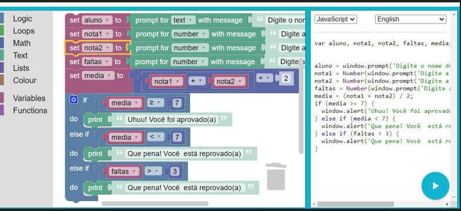

/*
Desenvolva, utilizando o Google Blockly, um programa que utiliza o nome de um aluno, duas notas e a quantidade de faltas que ele teve. Conclua se o aluno está aprovado ou reprovado de acordo com as especificações:
- Se a média do aluno for menor que sete, o sistema deve informar o nome do aluno e que ele está reprovado;
- Se o aluno possuir mais de três faltas, o sistema deve informar o nome do aluno e que ele está reprovado;
Se a média do aluno for maior ou igual a sete, o sistema deve informar o nome do aluno e que ele está aprovado.
No sistema, todos os valores devem estar armazenados em variáveis.
*/
!
Atividade3
